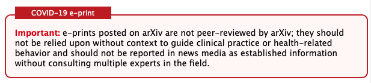

Chapter 1 - Sharing Your Ideas With The World
You've done it: you had an idea, found a research mentor to develop it with, and produced some novel results! Now what? It's time to share your findings with the Computer Science community. But what exactly is that community? How is it structured? Who gets to decide which ideas are sound and worthy of debate, and how are these decisions made? With two leading professional organizations and several popular open access archives, the world of academia has boundless opportunities for advancing the bounaries of knowledge in computing.
ACM & IEEE: Alphabet Soup
To share your ideas with the world, you need a world to share them with; a community of interested professionals and stakeholders. The Association for Computing Machinery (ACM) and the Institute of Electrical and Electronics Engineers (IEEE) provide this for the field of computer science. Each is a "technical professional society" by the IEEE's definition, but this encompasses so much more than just a title or membership. The IEEE and ACM coordinate conferences, journals, books, magazines, technical standards, and more. They uphold the process of peer review and provide professional networks that are invaluable for academics.
The ACM and IEEE are long-standing organizations, founded in 1947 and 1963, respectively. The IEEE was a merger of two separate technical societies, the American Institute of Electrical Engineers and the Institute of Radio Engineers, and is dedicated to studying interdiscplinary applications of electronics, which doesn't always necessarily involve computing in a typical sense. The IEEE has 39 "societies" dedicated to a particular field of study, which range from applications in medicine and biology to robotics, education, and aerospace.
The ACM is far more computing-focused, with the stated goal of advancing "the science, development, construction, and application of the new machinery for computing." Mirroring the IEEE's societies are the ACM's 39 Special Interest Groups (SIGs), which capture research areas including programming languages (SIGPLAN), software engineering (SIGSOFT), and human-computer interaction (SIGCHI). Both the ACM and IEEE broadly overlap in purpose and goals, but the IEEE is more focused on studying applied electronics, which happens to include applied computing, while the ACM studies computing, which includes its societal applications.
Along with their SIGS and Societies, both organizations share similar features. Each has a tiered organizational structure with a central governing body and local chapters. Multiple paid tiers of membership are offered, with student tiers being the most relevant for undergraduates. Membership can be necessary to submit to conferences sponsored by each organization. Each organization collects all of its proceedings in central, digital repositories: the IEEE Xplore and ACM Digital Library. Distinguished members of each organization can also be nominated for awards. The highest honor of the ACM is the Turing Award, while the IEEE offers the IEEE Medal of Honor.
However, with its broader scope, the IEEE hosts 300 annual conferences to the ACM's 170 and publishes 130 journals to the ACM's 50. Neither are necessarily in competition; both are relevant to the field of computer science, and it is likely that one or the other will be more relevant to you, depending on your field of choice. For a more detailed look at professional computing societies, visit the IEEE and ACM websites. Both organizations have a massive scope and history that is only touched upon here.
How can I find a conference to submit to?
Once you've taken a look at what academic membership has to offer, it's time to narrow things down a bit; what parts of the ACM and IEEE are most suitable for your area of work? It's likely that your research mentor will have an idea of where would be best to submit to. However, you can also do some independent work; start with a particular SIG or Society and see what types of conferences and journals they sponsor, and find which are particularly relevant to your work.
Due to the nature of the field, it's most likely that a first submission will be to a conference. Take Austrailia, for instance. Vrettas and Sanderson reviewed a government-sponsored survey of academic publications across all discilines. The survey revealed that Computer Science comprised 4% of all journal submissions, but a whopping 74% of all conference submissions. Vrettas and Sanderson highlight that journals still have a higher citation rate on average, but that a small number of elite conferences (ranked "A*" in the survey) have the highest citation impact.
Dr. Michael Ernst, a professor of CS at the University of Washington, recommends conferences for their higher status, visibility, and impact, all of which are historical attributes of CS. Conferences also occur at a higher rate, which can be beneficial in establishing a record of priority, which we'll revisit later in discussing whitepapers. However, journals have a higher page limit and a more detailed reviewing process, which can be beneficial depending on the nature of your work.
Overall, the venue for a submission should ideally determined by the quality and appropriateness of your work instead of being a consequence of some chase for prestige or citation. But the gist is, conferences are the way to go in CS.
So, let's take a look at a particular conference. If you're interested in programming languages, you'll likely have already taken a look at SIGPLAN: the ACM's Special Interest Group on Programming Languages. One of the conferences that they sponsor is the aforementioned POPL. The first thing to check for is the timeframe; POPL is hosted in late January, so submissions must be completed in the fall prior.
POPL has multiple submission types, or "Tracks", with different deadlines. These range from long-form paper submissions to workshops and tutorials to extended abstracts for their Student Research Competition. With a mentor's guidance, you can choose a Track that fits best with your work, or decide on a different conference if POPL isn't appropriate.
What's LaTeX?
Once you've chosen a CS conference track, the tool of choice for writing academic papers to submit is LaTeX. According to the LaTeX Project, it can be pronounced "lay-tech" or "lah-tech", but it's likely that you'll hear many variations in-between. LaTeX is a "typesetting" tool, and fills a role similar to HTML, albeit in a different category of professional use. Users enter the text of their paper, as well as additional formatting commands, and the LaTeX compiler spits out a polished PDF for distribution.
The LaTeX software can be downloaded and installed locally, which allows users to prepare documents in their favorite text editing tool and compile them via the command line. However, there are several other popular options for visual editing and compiling of LaTeX. Overleaf is the most popular, given that it's portable (runs in a web browser), has support for realtime collaborative editing, and provides built-in templates.
LaTeX syntax might be a little intimidating, but it generally boils down to two categories of commands. Some commands provide basic formatting; surrounding text with \textit{...} makes it italicised, \textbf{...} emphasized, \textsc{...} for smallcaps. Others surround a large chunk of text and apply properties to it. For example, the entirety of the body of a LaTeX document is fenced in by the \begin{document} and \end{document} commands. LaTeX is massive, flexible tool, and the best place to start learning is with one of Overleaf's guides, or from opening the LaTeX source code for a finished document to observe how each command shapes its final appearance.
When you have enough LaTeX under your belt to feel comfortable writing a paper, make sure to visit the website for the conference, journal, or other such venue that you are targetting to see if they provide any guidelines on how submissions should be typeset. For example, ACM conferences require that all submissions use the ACM Proceedings Template: a pre-built set of LaTeX styles that can be applied to a document via the \documentclass{} command. There are several sub-templates in this category, and many ways to adjust and customize each one. Some conferences require a specific customization; the POPLconference (Principles of Programming Languages), for instance, enforces the acmsmall option for long-form research submissions. Make sure to check, double check, and triple check the formatting requirements of a venue before hitting submit!
Time to Hit Submit - What's Next?
Let's say you've decided that POPL's Student Research Competition is the best venue for your work. You've carefully written and polished a 3-page extended abstract in LaTeX using the acmsmall documentclass option, and your research mentor or team has approved it. You navigate to the conference's website, visit the submission link, and upload a PDF along with contact information for you and your co-authors. And then... it's time to wait!
The next step after submission is to receive peer review, in which a a collection of peers within your discpline review your submission and decide whether it should be accepted. POPL follows the SIGPLAN guidelines of organizing a Program Committee (PC) that conducts the peer review process. In PC meetings and online discussions, these members review all submissions and decide which ones hit the mark for acceptance, and which should not be included. After these decisions are made, you will receive a summary of PC's review of your submission, indicating whether it has been accepted.
This summary will include feedback from multiple reviewers, indicating their level of expertise, the overall score of your paper (SIGPLAN's recommendations are "Good", "OK", "Weak", and "Serious problems"), and an itemized list of both positive and negative comments. This format will likely vary depending on the venue and it sponsoring organization, but comments tend to contian a mix of concerns ranging from high-level, conceptual remarks to low-level, editing details, such as indicating a problematic or incorrect word choice. If accepted, you will need to incorporate these concerns in a camera ready submission, which will be covered in a subsequent chapter.
Peer Review & Whitepapers: Why Wait?
Formal venues aren't the only way to share research with the world. Online repositories such as Cambridge University's arXiv provide a space for authors to publish their works without peer review. This has several key benefits. If your research idea is incredibly novel in a competitive field, publishing fast and early creates a record of priority, attributing the discovery to you. For example, famed mathematician Grigoriy Perelman's solution to the Poincare Conjecture was first published to the arXiv. Though it is not guaranteed, open-access archives may also allow for peer review at a broader scale, given that articles are available for anyone with an internet connect, and not hidden behind the paywalls common to major academic journals.
The current trend towards "open-access", where publications are avaliable to all, free-of-charge, has blurred the lines as to what constitutes a whitepaper. The same open-access repositories that distribute pre-prints are also used for post-prints, which are publications that have been accepted to a peer-reviewed conference or journal and uploaded to an open-access repository.
The convenient term "eprint" covers both of these categories, but be careful not to associate it with any degree of peer review or trustworthiness, given that it's been a tradition for academics to upload "joke submissions" to the arXiv. The arXiv and other similar repositories do have some degree of vetting, especially for certain categories like COVID-19 research.

Given the mix of submission types, publication categories, and the sheer dishonesty of humans, open-access archives generally do not guarantee any standard of peer review or validity. Be cautious and think critically lest you nick yourself on the cutting-edge of research.
Even if you don't plan on submitting a whitepaper, studying the eprint category can provide a useful perspective on what makes an academic paper successful. Lin et. al. found that published, peer-reviewed submissions to open-access archives were more likely to have referenced source code, were co-authored, and included 30% more references than the baseline. The majority of arXiv publications were also found to have been eventually published, too, with over two thirds (~77%) of submissions from 2007 to 2017 finding their way to publication with some modification. So be wary, but not too wary; open access repositories are an invaluable resource.
Conclusion
The goal in introducing each of these topics is to provide a foundational awareness and a stepping-off point into the world contained within. Though each is different, all concern the inner-workings of a community of research; how researchers organize themselves, format their findings, and share them. As such, the best place to start in becoming rapidly familiar with the CS community is to find a mentor. Lean on the knowledge of those that have come before, and never be afraid to ask questions or ask for help! Humility, acceptance, and eagerness are the best tools for success.